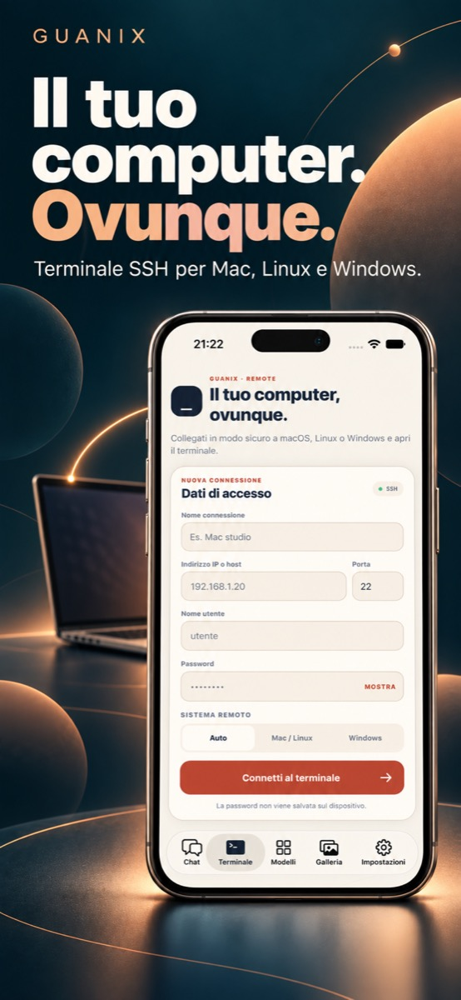

Dal pensiero al codice
Il terminale, in tasca
Collegati via SSH ai tuoi sistemi e affianca al terminale un agente capace di aiutarti con il codice. Per controllare, intervenire e continuare il lavoro anche lontano dalla scrivania.
- Accesso al terminale via SSH
- Agente per attività di sviluppo
- Codice e conversazione nello stesso flusso